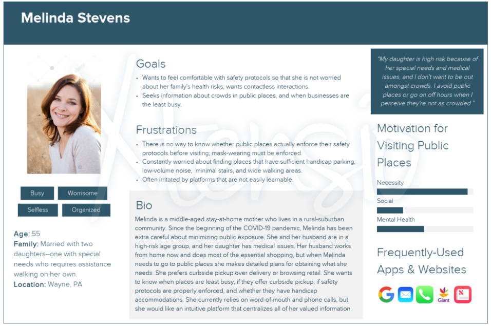
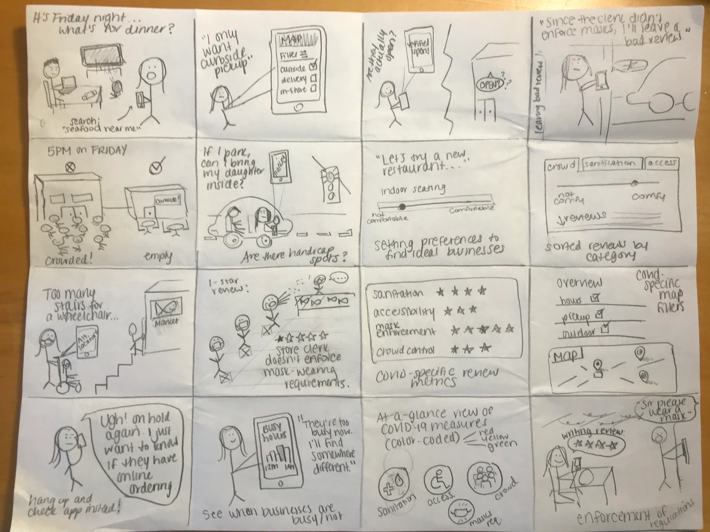
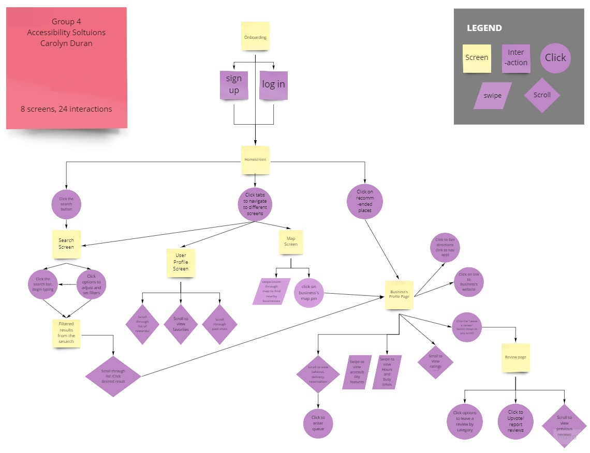
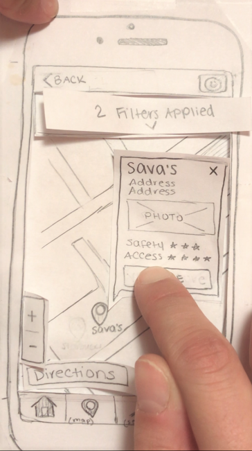
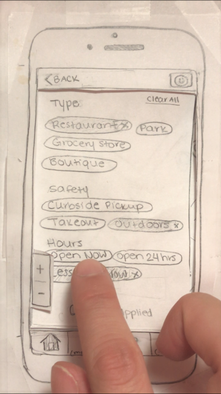
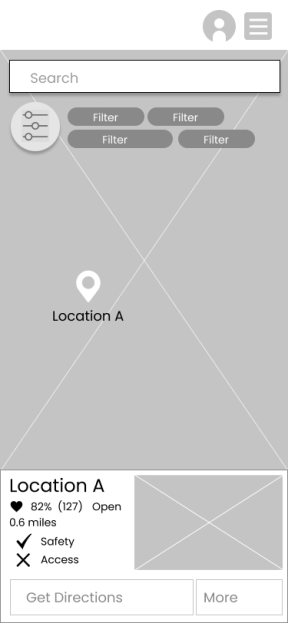
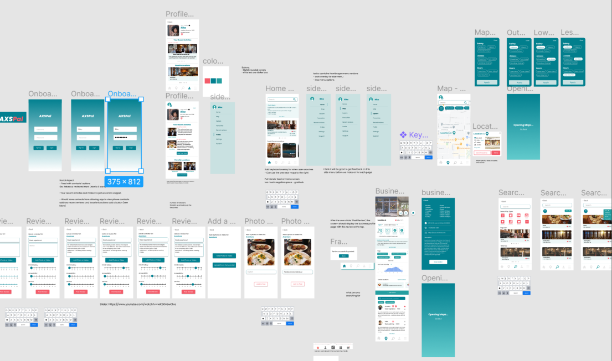

AXS Pal - Interaction Design
COVID-19 and Accessibility-Focused Map App
Problem: Information about COVID-19 protocols and accommodations for people with disabilities at certain locations and public spaces is not as readily available as it should be. This information impacts the quality of people’s lives, and can affect how they plan their day-to-day social activities and navigation.
How can we make it easier for people to find information about COVID and the businesses around them?
Goal: Design an interactive, crowdsourced map which provides increasingly-relevant accessibility and COVID information in a stunning interface while allowing for seamless social interaction.
Timeline: September 2020 – December 2020
My Roles: Researcher, Prototyper, Product Developer
Project Team: Carolyn Duran, Laura Li, Mai Nakhala, Kristen Picard, and Alexis Tait
Figma Prototype
Process
Skills: interaction design, product management, personas and scenarios, sketches and storyboarding, user flow, low-fi and high-fi prototyping
Tools: Paper Prototypes, Miro, Figma, user testing
Competitive Analysis
To start identifying users’ needs for an interactive crowdsourced map, the project team conducted competitive analysis with direct, indirect, and analogous competitors. Apps like WheelMate, OpenStreetMap, and AccessNow contained features like filtering, tags, and color-coded symbols that could inform our design decisions, however the team recognized several areas that would set AXS Pal apart from these competitors, including:
- An easily recognizable search and filter functionality that allows users to access and save information about accessibility in public spaces.
- The ability for users to input reviews for each location, including but not limited to information about accessibility.
- The ability to meet accessibility requirements of people with all kinds of disabilities both in its map information and in its physical interface functions.
An analogous competitor, the Starbucks app, informed decisions about the user flow on a map screen, suggesting that each location has a separate screen for business-specific information.
We can improve on Starbucks’ design by minimizing the amount of scrolling required to reach crucial information, thereby improving the experience for users who are in a rush or who have mobility impairments.
Interviews, Personas, and Scenarios
My group and I conducted and audio recorded 15-minute interviews of people who are especially conscious about COVID protocols or have specific accessibility needs, whether they are considered high risk for illness, are parents of small children, or have physical or cognitive disabilities.
I interviewed 3 myself, and we completed 12 total. We compiled data via notes, recordings, and transcriptions to assess users’ needs. We asked them questions like:
- How do you find information about places you need to go (i.e.grocery store, restaurant, library, bank, etc) in your daily life? What about those information resources makes the experience enjoyable? What makes it frustrating or unenjoyable?
- How has COVID impacted the way you find places to go?
- What information do you wish you could have when visiting public places? Would you use this information for certain places you visit over others?
We also created multiple personas and scenarios based on our interview data to further understand our target user group. We identified three themes:
- Users are seeking specific information about COVID protocol the places public spaces they plan to visit (e.g. capacity, seating options, reservations, building layout, sanitation procedure, etc.). These features will need to be good enough to encourage users to revisit them even after restrictions are lifted.
- Users’ feelings and actions around visiting public spaces have changed. They are seeking contactless options and options that require spending less time in public spaces. The social aspect of our platform will be a crucial space for people to indicate how they feel about established guidelines, and more importantly how they are enforced.
- Users want to know that they can trust the information source they are using. Verification of information is important to them.

Sketches, Storyboards, and User Flow Diagramming
As a group, we drew 180+ quick sketches to illustrate contexts and problems where users would potentially find our app useful. We combined our sketches into storyboards that helped us to identify additional problem areas and brainstorm interface features.
We created a user flow diagram with 8 app screens and 24 interactions displayed hierarchically. Feedback from peers helped us to improve the navigation between screens, suggesting more intuitive interactions and guiding our paper prototype development.


Paper Prototyping and User Testing
Each team member created a semi-functional paper prototype of different screens and interactions. I was responsible for the map screen where users can swipe through the map to find businesses, filter based on COVID and accessibility features, click locations for more information, and get directions by linking to an external map app. After testing this paper prototype in-person with peers, we identified weak design areas to improve upon in our wireframe design.


Wireframes and High-Fidelity Prototyping
The project team worked collaboratively in Figma to design a complete wireframe of the app screens, including onboarding, profile, home, map, review, business profile, and search screens. After receiving multiple rounds of feedback from peers and instructors, the team transferred the wireframes to a high-fidelity Figma project, adding all necessary interactions and ensuring consistency across all screens.


Impact
Although this map application will not be deployed for real-life use, our final prototype is highly functional.
The design process allowed the project team to identify a problem and create a solution with the user at the forefront of all design decisions. We can apply the same design process to other projects while incorporating a variety of user perspectives, including those who are particularly COVID-conscious and those who require particular accessibility requirements.
Outcomes
- Developed project management skills by working collaboratively (and remotely!) with a project team throughout the full interaction design process, utilizing shared prior knowledge and additional design principles learned in coursework.
- Practiced giving and receiving feedback from peers and instructors to inform design decisions.
- Expanded upon prior UX research and prototyping skills by teaching and learning from project partners, ultimately employing all group members’ strengths to design an optimized product in its final iteration.